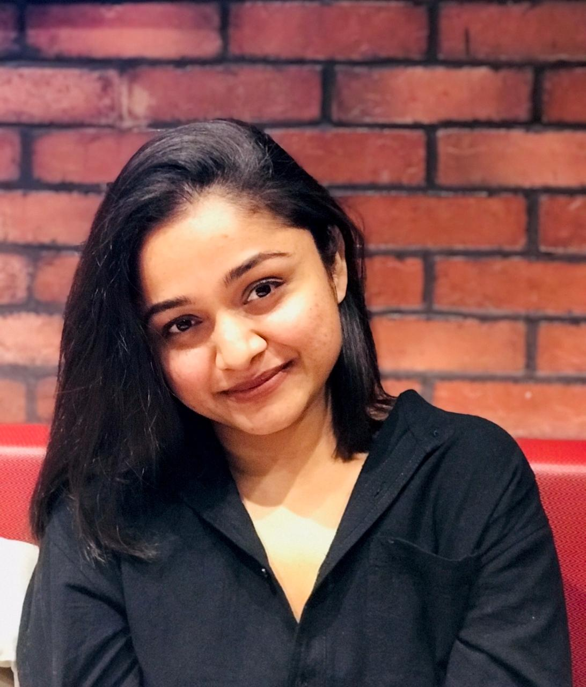

Sri Lanka’s No 1 Leading Chinese Language School & We’re Here to Help!!
Cultural Workshops
We welcome opportunities to work with schools and local communities to promote Chinese language & culture to develop understanding and create stronger links between Sri Lanka and China. Our cultural workshops are the perfect way to experience an exciting range of Chinese cultural activities for Sri Lankan students and to build connections via advanced linguistic and higher educational aspects. We offer a selection of workshops designed to introduce a range of Chinese language and cultural sessions.
The basic workshop structure consists of:
-
Chinese Language Taster
-
CalligraphyPaintingMartial ArtsChinese Tea CeremonyChinese Arts & CraftsChinese CookingSingingQigong & Mindfulness Activities with Chinese Bamboo Flute MusicChinese Educational Consultation & Career Opportunities
Awareness and Training Sessions
This program is mainly developed for school and university-level students, which is conducted by the academy tutors to introduce the linguistic importance, enhance and motivate to get prepared for the near exams (O/L, A/L, University exams, HSK Exams) and increase awareness in ground level starting from schools to universities. These programs are mainly designed to support students and the school-level education system to introduce the latest educational techniques and enhance the skills to overcome linguistic hardships in the process of learning.
How To Book
If your school or organization would like us to run a language or cultural workshop, please feel free to get in touch using the details below.
Email: To contact us through email
Whatsapp: To contact us through whatsapp
Survey: Fill out this survey
About The Mandarin School Sri Lanka
The Mandarin School Sri Lanka by Xia Laoshi is the leading Mandarin Chinese provider in Sri Lanka with the rapid evolution of 05 successful years by enhancing the Sri Lankan and global students from Chinese Language and cultural aspects. We are collaborated with the best tutors in Sri Lanka as well as China who has the experience, skills and precise knowledge in Chinese Language and Linguistic teaching proficiency with modernized techniques. With the vision of the founder and the CEO, Xia Laoshi (Mrs: Jayaliya Ishara) we are rapidly expanding globally by signifying the Xia Laoshi Chinese Academy footprint with our learning centres. We constantly value enhanced and updated teaching techniques and sustainable teaching methods to our students from our skilled lectures. The foundation of Mandarin school Sri Lanka is laid with the aim to provide modernized, easy and effective Mandarin study programs with quality teaching service to the Sri Lankan community which spread over corporate organizations, schools, colleges, universities and all who are based in Sri Lanka from various countries in the world.
Our Vision
Provide equal opportunity to be globalized via effective communication and lead the knowledge, skills, and peace to make the world interconnected, strong, and a better place.
Meet the Head Lecturer
Mrs. Jayaliya Ishara (Xia Laoshi)
Founder and CEO of Mandarin School Sri Lanka.Mrs. Jayaliya Ishara (Xia Laoshi) is a professional Mandarin Chinese Lecturer based in the United Kingdom over 4 years of experience providing Mandarin Chinese linguistic and cultural knowledge to both local and overseas students. Founder of Xia Laoshi Chinese Academy in 2020 with the intention of expanding more opportunities to Sri Lankan and global students via international languages. She was graduated from Chongqing normal university, China in Teaching Chinese to speakers of other languages. With 05 years of Chinese native experience and social influence, she started her career in 2018 in China by joining with Chinese academic institution of ‘’Mathematical Olympiad collage in Yanjiaping, Chongqing’’ and consecutively as a Mandarin - English language teacher at ‘’英语提分宝 (Yingyu ti fen bao) institution’’. With the skills and modernized leading teaching skills in 2023 she further facilitated her service to United Kingdom-based academic institutions and further expanded her professional background via certified child minder and safeguard aspects.
‘’I extremely believe the essentialness of communication and the impact of it all over the world for all these years I have been studied and worked internationally and locally. I am privileged to do the best I can to uplift the knowledge and skill sets of our students to deliver it in a creative manner globally via removing the barriers of communication and value the Sri Lankan essence’’
Mrs. Jayaliya Ishara (Xia Laoshi),
Bachelor (Honours) in Teaching Chinese to Speakers of other Languages, Chongqing normal university, China. Diploma in Chinese language & culture (Chongqing normal university, China). RQF level 6 / SCQF level 10/ CQFW level 6 qualified language teacher (United Kingdom). HSK 6 & HSKK qualified, China. Qualified safeguarding lead (child protection and safeguarding ) - United Kingdom, 2022. Certified Child Minder, UK, 2023.Chinese Native Academic partnership and the Instructor:

Mr. Xiong Xiting
Founder and the CEO of Mi Mandarin AcademyBachelor in Teaching Chinese to Speakers of Other Languages (2014-2015), Teaching Chinese in Thailand Middle School (2019-2024).
Local academic partnership and the kids Instructor :
Ms. Naveena Rajapaksha
Bachelor in Teaching Chinese To Speakers Of Other Languages, Chongqing Normal University, China.(2015-2020). HSK 6 Qualified.